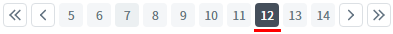
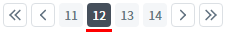

PageList의 'pagingType' 속성을 사용하여 잔여 페이지를 화면에 표시하는 방식을 설정한 예제입니다. 잔여 페이지의 계산식은 '전체 페이지 % 화면에 표시할 페이지 수'입니다.
속성의 설정에 따른 동작은 다음과 같습니다.
"1" : [default] 'pageSize' 속성에 설정한 값을 기준으로 페이지를 표시합니다. 속성 'buttonShowType'의 설정 값이 '3'이면 이 설정은 지원하지 않습니다.
"2" : 남은 페이지만 표시합니다.
'pagingType' 속성의 설정 값을 "1"로 설정한 예시
'pagingType' 속성의 설정 값을 "2"로 설정한 예시
구성된 예제는 다음의 조건이 동일하게 설정되었습니다.
화면에 표시할 페이지 수('pageSize' 속성) : '10'
전체 페이지 수 : '14'
선택된 페이지 : '12'
예제별 마지막 페이지를 화면에 표시(구성)하는 방식을 비교합니다.
1
실행된 결과를 확인합니다.
예제 영역 '(기본 설정) pagingType: 1'에 구성된 'PageList'를 확인합니다.
선택된 페이지는 '12'이며, 화면에 표시된 페이지는 '5'부터 '14'까지입니다.
마지막 목록에 표시된 페이지는 'PageList'에 설정 된 'pageSize' 속성(화면에 표시할 페이지 수)의 값 '10'에 맞춰 페이지 번호 10개가 표시됩니다.Image 1.브라우저(Chrome) 실행 예시

1
실행된 결과를 확인합니다.
예제 영역 'pagingType: 2'에 구성된 'PageList'를 확인합니다.
선택된 페이지는 '12'이며, 화면에 표시된 페이지는 '11'부터 '14'까지입니다.Image 2.브라우저(Chrome) 실행 예시

1
속성을 정의합니다.
[필수] pagingType="옵션 값"
(옵션 설명)
- "1" : [default] 'pageSize' 속성에 설정한 값을 기준으로 페이지를 표시합니다. 속성 'buttonShowType'의 설정 값이 '3'이면 이 설정은 지원하지 않습니다.
- "2" : 남은 페이지만 표시합니다.
[선택] pageSize="화면에 표시할 페이지 번호의 개수"
기본 설정 값은 "10"입니다.
pagingType
pageSize